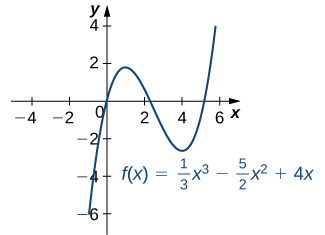
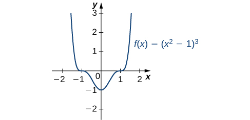
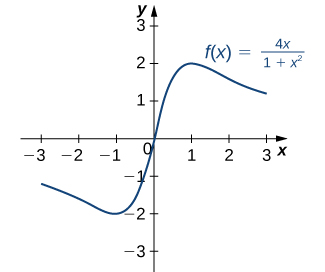
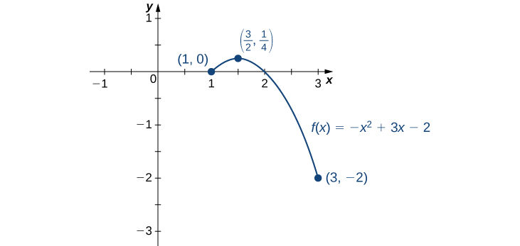
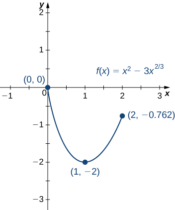
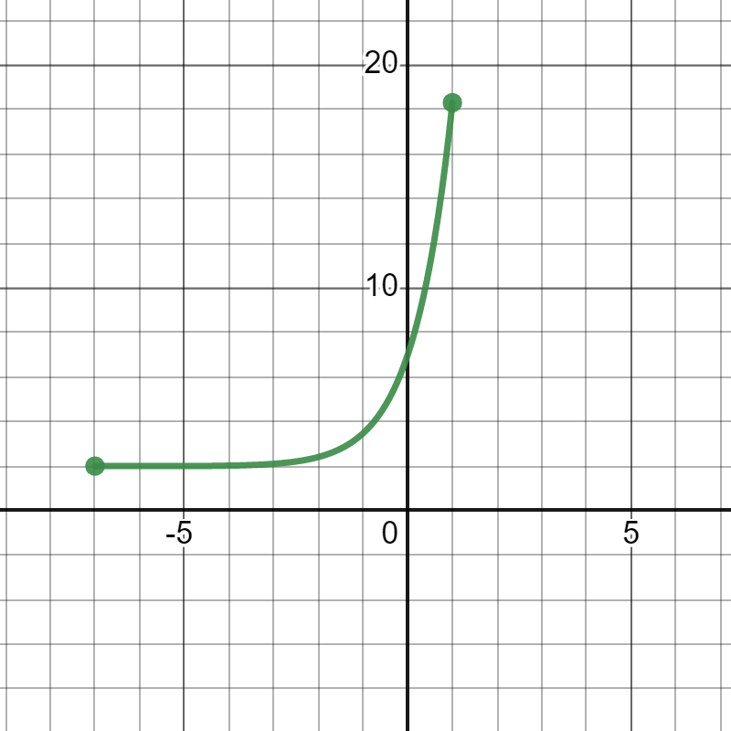
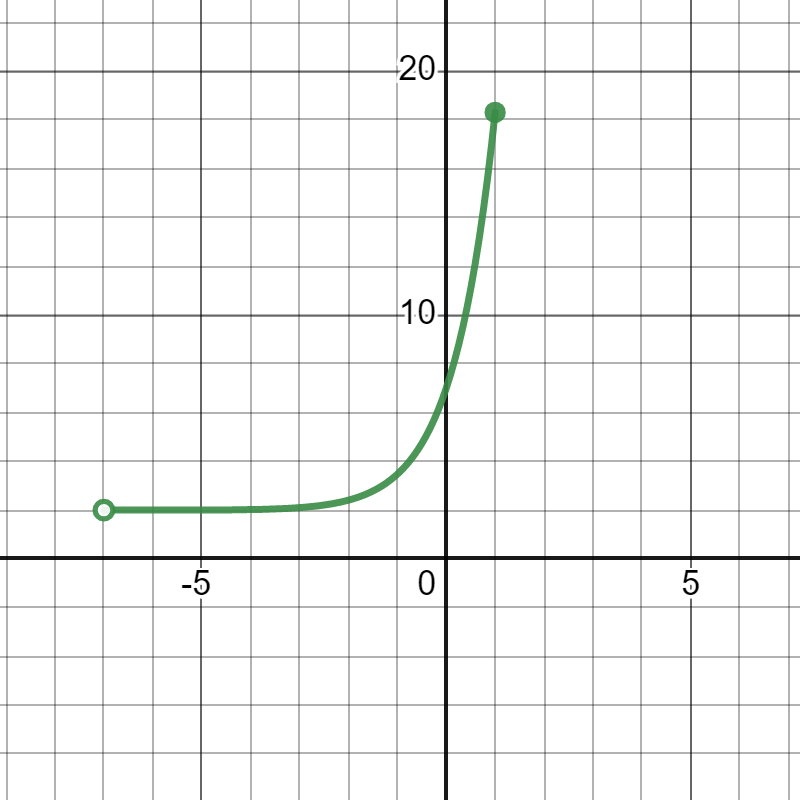
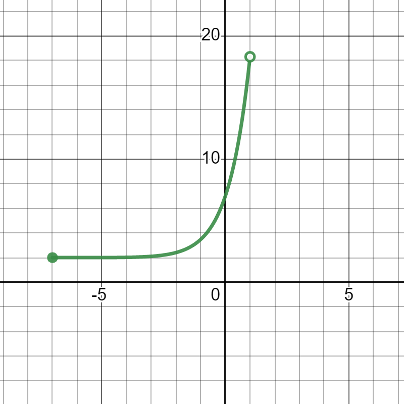

Section 4.3 Maxima and Minima
Learning Objectives.
Define absolute extrema.
Define local extrema.
Explain how to find the critical points of a function over an interval.
Describe how to use critical points to locate absolute extrema over an interval.
Given a particular function, we are often interested in determining the largest and smallest values of the function. This information is important in creating accurate graphs. Finding the maximum and minimum values of a function also has practical significance because we can use this method to solve optimization problems, such as maximizing profit, minimizing the amount of material used in manufacturing an aluminum can, or finding the maximum height a rocket can reach. In this section, we look at how to use derivatives to find the largest and smallest values for a function.
Subsection 4.3.1 Absolute Extrema
Consider the function \(f(x)=x^2+1\) over the interval \((-\infty ,\infty ).\) As \(x\to \pm \infty ,\) \(f(x)\to \infty .\) Therefore, the function does not have a largest value. However, since \(x^2+1\geq 1\) for all real numbers \(x\) and \(x^2+1=1\) when \(x=0,\) the function has a smallest value, 1, when \(x=0.\) We say that 1 is the absolute minimum of \(f(x)=x^2+1\) and it occurs at \(x=0.\) We say that \(f(x)=x^2+1\) does not have an absolute maximum (see the following figure).
Definition 4.25.
Let \(f\) be a function defined over an interval \(I\) and let \(c∈I.\) We say \(f\) has an absolute maximum on \(I\) at \(c\) if \(f(c)\geq f(x)\) for all \(x∈I.\) We say \(f\) has an absolute minimum on \(I\) at \(c\) if \(f(c)\leq f(x)\) for all \(x∈I.\) If \(f\) has an absolute maximum on \(I\) at \(c\) or an absolute minimum on \(I\) at \(c,\) we say \(f\) has an absolute extremum on \(I\) at \(c.\)
Before proceeding, let’s note two important issues regarding this definition. First, the term absolute here does not refer to absolute value. An absolute extremum may be positive, negative, or zero. Second, if a function \(f\) has an absolute extremum over an interval \(I\) at \(c,\) the absolute extremum is \(f(c).\) The real number \(c\) is a point in the domain at which the absolute extremum occurs. For example, consider the function \(f(x)=1/(x^2+1)\) over the interval \((-\infty ,\infty ).\) Since
for all real numbers \(x,\) we say \(f\) has an absolute maximum over \((-\infty ,\infty )\) at \(x=0.\) The absolute maximum is \(f(0)=1.\) It occurs at \(x=0,\) as shown in Figure 4.26(b).
A function may have both an absolute maximum and an absolute minimum, just one extremum, or neither. Figure 4.26 shows several functions and some of the different possibilities regarding absolute extrema. However, the following theorem, called the Extreme Value Theorem, guarantees that a continuous function \(f\) over a closed, bounded interval \([a,b]\) has both an absolute maximum and an absolute minimum.
!["This figure has six parts a, b, c, d, e, and f. In figure a, the line f(x) = x3 is shown, and it is noted that it has no absolute minimum and no absolute maximum. In figure b, the line f(x) = 1/(x2 + 1) is shown, which is near 0 for most of its length and rises to a bump at (0, 1); it has no absolute minimum, but does have an absolute maximum of 1 at x = 0. In figure c, the line f(x) = cos x is shown, which has absolute minimums of −1 at ±π, ±3π, … and absolute maximums of 1 at 0, ±2π, ±4π, …. In figure d, the piecewise function f(x) = 2 – x2 for 0 ≤ x \lt 2 and x – 3 for 2 ≤ x ≤ 4 is shown, with absolute maximum of 2 at x = 0 and no absolute minimum. In figure e, the function f(x) = (x – 2)2 is shown on [1, 4], which has absolute maximum of 4 at x = 4 and absolute minimum of 0 at x = 2. In figure f, the function f(x) = x/(2 − x) is shown on [0, 2), with absolute minimum of 0 at x = 0 and no absolute maximum."](external/CNX_Calc_Figure_04_03_010.jpg)
Theorem 4.27. Extreme Value Theorem.
If \(f\) is a continuous function over the closed, bounded interval \([a,b],\) then there is a point in \([a,b]\) at which \(f\) has an absolute maximum over \([a,b]\) and there is a point in \([a,b]\) at which \(f\) has an absolute minimum over \([a,b].\)
The proof of the extreme value theorem is beyond the scope of this text. Typically, it is proved in a course on real analysis. There are a couple of key points to note about the statement of this theorem. For the extreme value theorem to apply, the function must be continuous over a closed, bounded interval. If the interval \(I\) is open or the function has even one point of discontinuity, the function may not have an absolute maximum or absolute minimum over \(I.\) For example, consider the functions shown in Figure 4.26(d), (e), and (f). All three of these functions are defined over bounded intervals. However, the function in graph (e) is the only one that has both an absolute maximum and an absolute minimum over its domain. The extreme value theorem cannot be applied to the functions in graphs (d) and (f) because neither of these functions is continuous over a closed, bounded interval. Although the function in graph (d) is defined over the closed interval \([0,4],\) the function is discontinuous at \(x=2.\) The function has an absolute maximum over \([0,4]\) but does not have an absolute minimum. The function in graph (f) is continuous over the half-open interval \([0,2),\) but is not defined at \(x=2,\) and therefore is not continuous over a closed, bounded interval. The function has an absolute minimum over \([0,2),\) but does not have an absolute maximum over \([0,2).\) These two graphs illustrate why a function over a bounded interval may fail to have an absolute maximum and/or absolute minimum.
Before looking at how to find absolute extrema, let’s examine the related concept of local extrema. This idea is useful in determining where absolute extrema occur.
Subsection 4.3.2 Local Extrema and Critical Points
Consider the function \(f\) shown in Figure 4.28. The graph can be described as two mountains with a valley in the middle. The absolute maximum value of the function occurs at the higher peak, at \(x=2.\) However, \(x=0\) is also a point of interest. Although \(f(0)\) is not the largest value of \(f,\) the value \(f(0)\) is larger than \(f(x)\) for all \(x\) near 0. We say \(f\) has a local maximum at \(x=0.\) Similarly, the function \(f\) does not have an absolute minimum, but it does have a local minimum at \(x=1\) because \(f(1)\) is less than \(f(x)\) for \(x\) near 1.
Definition 4.29.
A function \(f\) has a local maximum at \(c\) if there exists an open interval \(I\) containing \(c\) such that \(I\) is contained in the domain of \(f\) and \(f(c)\geq f(x)\) for all \(x∈I.\) A function \(f\) has a local minimum at \(c\) if there exists an open interval \(I\) containing \(c\) such that \(I\) is contained in the domain of \(f\) and \(f(c)\leq f(x)\) for all \(x∈I.\) A function \(f\) has a local extremum at \(c\) if \(f\) has a local maximum at \(c\) or \(f\) has a local minimum at \(c.\)
Note that if \(f\) has an absolute extremum at \(c\) and \(f\) is defined over an interval containing \(c,\) then \(f(c)\) is also considered a local extremum. If an absolute extremum for a function \(f\) occurs at an endpoint, we do not consider that to be a local extremum, but instead refer to that as an endpoint extremum.
Given the graph of a function \(f,\) it is sometimes easy to see where a local maximum or local minimum occurs. However, it is not always easy to see, since the interesting features on the graph of a function may not be visible because they occur at a very small scale. Also, we may not have a graph of the function. In these cases, how can we use a formula for a function to determine where these extrema occur?
To answer this question, let’s look at Figure 4.28 again. The local extrema occur at \(x=0,\) \(x=1,\) and \(x=2.\) Notice that at \(x=0\) and \(x=1,\) the derivative \(f'(x)=0.\) At \(x=2,\) the derivative \(f'(x)\) does not exist, since the function \(f\) has a corner there. In fact, if \(f\) has a local extremum at a point \(x=c,\) the derivative \(f'(c)\) must satisfy one of the following conditions: either \(f'(c)=0\) or \(f'(c)\) is undefined. Such a value \(c\) is known as a critical point and it is important in finding extreme values for functions.
Definition 4.30.
Let \(c\) be an interior point in the domain of \(f.\) We say that \(c\) is a critical point of \(f\) if \(f'(c)=0\) or \(f'(c)\) is undefined.
As mentioned earlier, if \(f\) has a local extremum at a point \(x=c,\) then \(c\) must be a critical point of \(f.\) This fact is known as Fermat’s theorem.
Theorem 4.31. Fermat’s Theorem.
If \(f\) has a local extremum at \(c\) and \(f\) is differentiable at \(c,\) then \(f'(c)=0.\)
From Fermat’s theorem, we conclude that if \(f\) has a local extremum at \(c,\) then either \(f'(c)=0\) or \(f'(c)\) is undefined. In other words, local extrema can only occur at critical points.
Note this theorem does not claim that a function \(f\) must have a local extremum at a critical point. Rather, it states that critical points are candidates for local extrema. For example, consider the function \(f(x)=x^3.\) We have \(f'(x)=3x^2=0\) when \(x=0.\) Therefore, \(x=0\) is a critical point. However, \(f(x)=x^3\) is increasing over \((-\infty ,\infty ),\) and thus \(f\) does not have a local extremum at \(x=0.\) In Figure 4.32, we see several different possibilities for critical points. In some of these cases, the functions have local extrema at critical points, whereas in other cases the functions do not. Note that these graphs do not show all possibilities for the behavior of a function at a critical point.
!["This figure has five parts a, b, c, d, and e. In figure a, a parabola is shown facing down in quadrant I; there is a horizontal tangent line at the local maximum marked f’(c) = 0. In figure b, there is a function drawn with an asymptote at c, meaning that the function increases toward infinity on both sides of c; it is noted that f’(c) is undefined. In figure c, a version of the absolute value graph is shown that has been shifted so that its minimum is in quadrant I with x = c. It is noted that f’(c) is undefined. In figure d, a version of the function f(x) = x3 is shown that has been shifted so that its inflection point is in quadrant I with x = c. Its inflection point at (c, f(c)) has a horizontal line through it, and it is noted that f’(c) = 0. In figure e, a version of the function f(x) = x1/3 is shown that has been shifted so that its inflection point is in quadrant I with x = c. Its inflection point at (c, f(c)) has a vertical line through it, and it is noted that f’(c) is undefined."](external/CNX_Calc_Figure_04_03_004.jpg)
Later in this chapter we look at analytical methods for determining whether a function actually has a local extremum at a critical point. For now, let’s turn our attention to finding critical points. We will use graphical observations to determine whether a critical point is associated with a local extremum.
Example 4.33. Locating Critical Points.
For each of the following functions, find all critical points. Use a graphing utility to determine whether the function has a local extremum at each of the critical points.
\(\displaystyle f(x)=\frac{1}{3}x^3-\frac{5}{2}x^2+4x\)
\(\displaystyle f(x)=(x^2-1)^3\)
\(\displaystyle f(x)=\frac{4x}{1+x^2}\)
- The derivative \(f'(x)=x^2-5x+4\) is defined for all real numbers \(x.\) Therefore, we only need to find the values for \(x\) where \(f'(x)=0.\) Since \(f'(x)=x^2-5x+4=(x-4)}{(x-1),\) the critical points are \(x=1\) and \(x=4.\) From the graph of \(f\) in Figure 4.34, we see that \(f\) has a local maximum at \(x=1\) and a local minimum at \(x=4.\) 
Figure 4.34. This function has a local maximum and a local minimum. - Using the chain rule, we see the derivative is\begin{equation*} f'(x)=3(x^2-1)^2(2x)=6x(x^2-1)^2. \end{equation*}Therefore, \(f\) has critical points when \(x=0\) and when \(x^2-1=0.\) We conclude that the critical points are \(x=0,\pm 1.\) From the graph of \(f\) in Figure 4.35, we see that \(f\) has a local (and absolute) minimum at \(x=0,\) but does not have a local extremum at \(x=1\) or \(x=-1.\)
Figure 4.35. This function has three critical points: \(x=0,\) \(x=1,\) and \(x=-1.\) The function has a local (and absolute) minimum at \(x=0,\) but does not have extrema at the other two critical points. - By the chain rule, we see that the derivative is\begin{equation*} f'(x)=\frac{(1+x^2)(4)-4x(2x)}{(1+x^2)^2}=\frac{4-4x^2}{(1+x^2)^2}. \end{equation*}The derivative is defined everywhere. Therefore, we only need to find values for \(x\) where \(f'(x)=0.\) Solving \(f'(x)=0,\) we see that \(4-4x^2=0,\) which implies \(x=\pm 1.\) Therefore, the critical points are \(x=\pm 1.\) From the graph of \(f\) in Figure 4.36, we see that \(f\) has an absolute maximum at \(x=1\) and an absolute minimum at \(x=-1.\) Hence, \(f\) has a local maximum at \(x=1\) and a local minimum at \(x=-1.\) (Note that if \(f\) has an absolute extremum over an interval \(I\) at a point \(c\) that is not an endpoint of \(I,\) then \(f\) has a local extremum at \(c.)\)
Figure 4.36. This function has an absolute maximum and an absolute minimum.
Checkpoint 4.37.
Find all critical points for \(f(x)=x^3-\frac{1}{2}x^2-2x+1.\)
Subsection 4.3.3 Locating Absolute Extrema
The extreme value theorem states that a continuous function over a closed, bounded interval has an absolute maximum and an absolute minimum. As shown in Figure 4.26, one or both of these absolute extrema could occur at an endpoint. If an absolute extremum does not occur at an endpoint, however, it must occur at an interior point, in which case the absolute extremum is a local extremum. Therefore, by Theorem 4.31, the point \(c\) at which the local extremum occurs must be a critical point. We summarize this result in the following theorem.
Theorem 4.38. Location of Absolute Extrema.
Let \(f\) be a continuous function over a closed, bounded interval \(I.\) The absolute maximum of \(f\) over \(I\) and the absolute minimum of \(f\) over \(I\) must occur at endpoints of \(I\) or at critical points of \(f\) in \(I.\)
With this idea in mind, let’s examine a procedure for locating absolute extrema.
Note 4.39. Problem-Solving Strategy: Locating Absolute Extrema over a Closed Interval.
Consider a continuous function \(f\) defined over the closed interval \([a,b].\)
Evaluate \(f\) at the endpoints \(x=a\) and \(x=b.\)
Find all critical points of \(f\) that lie over the interval \((a,b)\) and evaluate \(f\) at those critical points.
Compare all values found in (1) and (2). From Theorem 4.38, the absolute extrema must occur at endpoints or critical points. Therefore, the largest of these values is the absolute maximum of \(f.\) The smallest of these values is the absolute minimum of \(f.\)
Now let’s look at how to use this strategy to find the absolute maximum and absolute minimum values for continuous functions.
Example 4.40. Locating Absolute Extrema.
For each of the following functions, find the absolute maximum and absolute minimum over the specified interval and state where those values occur.
\(f(x)=-x^2+3x-2\) over \([1,3].\)
\(f(x)=x^2-3x^{2/3}\) over \([0,2].\)
- Step 1. Evaluate \(f\) at the endpoints \(x=1\) and \(x=3.\)\begin{equation*} f(1)=0 \text{ and } f(3)=-2 \end{equation*}Step 2. Since \(f'(x)=-2x+3,\) \(f'\) is defined for all real numbers \(x.\) Therefore, there are no critical points where the derivative is undefined. It remains to check where \(f'(x)=0.\) Since \(f'(x)=-2x+3=0\) at \(x=\frac{3}{2}\) and \(\frac{3}{2}\) is in the interval \([1,3],\) \(f(\frac{3}{2})\) is a candidate for an absolute extremum of \(f\) over \([1,3].\) We evaluate \(f(\frac{3}{2})\) and find\begin{equation*} f(\frac{3}{2})=\frac{1}{4}. \end{equation*}Step 3. We set up the following table to compare the values found in steps 1 and 2.From the table, we find that the absolute maximum of \(f\) over the interval [1, 3] is \(\frac{1}{4},\) and it occurs at \(x=\frac{3}{2}.\) The absolute minimum of \(f\) over the interval [1, 3] is \(-2,\) and it occurs at \(x=3\) as shown in the following graph.
Table 4.41. \(x\) \(f(x)\) Conclusion \(0\) \(0\) \(\frac{3}{2}\) \(\frac{1}{4}\) Absolute maximum \(3\) \(-2\) Absolute minimum Figure 4.42. This function has both an absolute maximum and an absolute minimum. - Step 1. Evaluate \(f\) at the endpoints \(x=0\) and \(x=2.\)\begin{equation*} f(0)=0 \text{ and } f(2)=4-3\sqrt[3]{4} \approx -0.762 \end{equation*}Step 2. The derivative of \(f\) is given by\begin{equation*} f'(x)=2x-\frac{2}{x^{1/3}}=\frac{2x^{4/3}-2}{x^{1/3}} \end{equation*}for \(x\neq 0.\) The derivative is zero when \(2x^{4/3}-2=0,\) which implies \(x=\pm 1.\) The derivative is undefined at \(x=0.\) Therefore, the critical points of \(f\) are \(x=0,1,-1.\) The point \(x=0\) is an endpoint, so we already evaluated \(f(0)\) in step 1. The point \(x=-1\) is not in the interval of interest, so we need only evaluate \(f(1).\) We find that\begin{equation*} f(1)=-2. \end{equation*}Step 3. We compare the values found in steps 1 and 2, in the following table.We conclude that the absolute maximum of \(f\) over the interval [0, 2] is zero, and it occurs at \(x=0.\) The absolute minimum is -2, and it occurs at \(x=1\) as shown in the following graph.
Table 4.43. \(x\) \(f(x)\) Conclusion \(0\) \(0\) Absolute maximum \(1\) \(-2\) Absolute minimum \(2\) \(-0.762\) Figure 4.44. This function has an absolute maximum at an endpoint of the interval.
Checkpoint 4.45.
Find the absolute maximum and absolute minimum of \(f(x)=x^2-4x+3\) over the interval \([1,4].\)
At this point, we know how to locate absolute extrema for continuous functions over closed intervals.
We will next determine the location and existence of absolute extrema on intervals that are not closed. Let us consider the existence of absolute extrema by analyzing the graph of \(f(x)=x^2-4x\) on the interval (1,5) as shown in Figure 4.46. Note that here the interval (1,5) is not closed. We can see that the absolute minimum exists and is \(f(2)=-4\text{.}\) If an absolute maximum existed, it would be at \(x=5\text{,}\) but \(f\) is not defined at \(x=5\) since it is not included in our given interval. Here, we would say that the absolute maximum of \(f\) over the inteval (1,5) DNE.
A problem-solving strategy has been outlined below for intervals that are not closed.
Note 4.47. Problem-Solving Strategy: Locating and Determining the Existence of Absolute Extrema over an Interval that is not Closed.
Consider a continuous function \(f\) defined over an interval that is not closed i.e.\((a,b],\;[a,b),\text{ or }(a,b).\)
\(f\)\(x=a\)\(x=b\)
If the left endpoint \(a\) is not included in the interval (i.e. the given interval is (a,b]), then evaluate \(\displaystyle{\lim_{x\to a^+}f(x)}\) and \(f(b).\)
If the right endpoint \(b\) is not included in the interval (i.e. the given interval is [a,b)), then evaluate \(\displaystyle{\lim_{x\to b^-}f(x)}\) and \(f(a).\)
If both the left and right endpoints \(a \text{ and } b\) are not included in the interval (i.e. the given interval is (a,b)), then evaluate \(\displaystyle{\lim_{x\to a^+}f(x)}\) and \(\displaystyle{\lim_{x\to b^-}f(x)}.\)
Find all critical points of \(f\) that lie over the interval \((a,b)\) and evaluate \(f\) at those critical points.
Compare all values found in (1) and (2). We know that the absolute extrema must occur at endpoints or critical points. However, if absolute extrema occurs at an endpoint not included in the interval, we say the absolute maximum or absolute minimum DNE. Therefore, the largest of these values is the absolute maximum of \(f\) if it occurred at a point included in the interval. The smallest of these values is the absolute minimum of \(f\) if it occurred at a point included in the interval. Otherwise, the absolute maximum or absolute minimum DNE.
Example 4.48.
Find the absolute maximum and absolute minimum of \(f(x)=2+(x+5)e^x\) over the following intervals.
[-7,1]
(-7,1]
[-7,1)
- For the interval \([-7,1]\) From the table, we find that the absolute maximum of \(f\) over the interval [-7,1] is \(2+6e\approx 18.3097,\) and it occurs at \(x=1.\) The absolute minimum of \(f\) over the interval [-7, 1] is \(2-e^{-6}\approx 1.9975,\) and it occurs at \(x=-6\) as shown in the following graph.
Table 4.49. \(x\) \(f(x)\) Conclusion \(-7\) \(1.9982\) \(-6\) \(1.9975\) Absolute minimum \(1\) \(18.3097\) Absolute maximum Figure 4.50. \(f(x) = 2+(x+5)e^x\) on the interval [-7,1]. - For the interval \((-7,1]\) From the table, we find that the absolute maximum of \(f\) over the interval (-7,1] is \(2+6e\approx 18.3097,\) and it occurs at \(x=1.\) The absolute minimum of \(f\) over the interval (-7, 1] is \(2-e^{-6}\approx 1.9975,\) and it occurs at \(x=-6\) as shown in the following graph.
Table 4.51. \(x\) \(f(x)\) Conclusion \(-7\) \(1.9982\) \(-6\) \(1.9975\) Absolute minimum \(1\) \(18.3097\) Absolute maximum Figure 4.52. \(f(x) = 2+(x+5)e^x\) on the interval (-7,1]. - For the interval \([-7,1)\) From the table, we find that the absolute maximum of \(f\) over the interval [-7,1) DNE since \(x=1\) is not included in the interval. The absolute minimum of \(f\) over the interval [-7, 1) is \(2-e^{-6}\approx 1.9975,\) and it occurs at \(x=-6\) as shown in the following graph.
Table 4.53. \(x\) \(f(x)\) Conclusion \(-7\) \(1.9982\) \(-6\) \(1.9975\) Absolute minimum \(1\) \(18.3097\) Absolute maximum DNE Figure 4.54. \(f(x) = 2+(x+5)e^x\) on the interval [-7,1).
Checkpoint 4.55.
Find the absolute maximum and absolute minimum of \(g(x)=12x^2-32x\) over the interval \([-2,3)\)
| \(x\) | \(g(x)\) | Conclusion |
|---|---|---|
| \(-2\) | \(0\) | |
| \(-1\) | \(16\) | Absolute maximum |
| \(3\) | \(-240\) | Absolute minimum DNE |
In this section, we determined the value and existence of absolute extrema over any given interval. We also defined local extrema and determined that if a function \(f\) has a local extremum at a point \(c,\) then \(c\) must be a critical point of \(f.\) However, \(c\) being a critical point is not a sufficient condition for \(f\) to have a local extremum at \(c.\) Later in this chapter, we show how to determine whether a function actually has a local extremum at a critical point.
Subsection 4.3.4 Key Concepts
A function may have both an absolute maximum and an absolute minimum, have just one absolute extremum, or have no absolute maximum or absolute minimum.
If a function has a local extremum, the point at which it occurs must be a critical point. However, a function need not have a local extremum at a critical point.
A continuous function over a closed, bounded interval has an absolute maximum and an absolute minimum. Each extremum occurs at a critical point or an endpoint. If the interval is not closed, then there may not exist an absolute maximum or minimum.